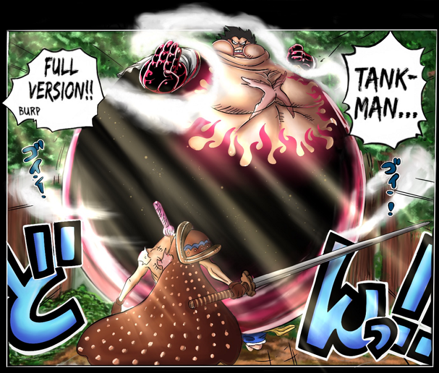

Monkey D. Luffy
Monkey D. Luffy, also known as "Straw Hat Luffy" and commonly as "Straw Hat", is the main protagonist of the manga and anime, One Piece. He is the founder and captain of the increasingly infamous and powerful Straw Hat Pirates, as well as one of its top fighters. He desires to find the legendary treasure left behind by the late Gol D. Roger and thereby become the Pirate King, which would help facilitate an unknown dream of his that he has told only to his brothers and crew. He believes that being the Pirate King means having the most freedom in the world.
Born in Foosha Village, Luffy is the son of Monkey D. Dragon, the leader of the Revolutionary Army, and the grandson of the Marine hero Monkey D. Garp, and their family carries the initial and Will of D. Luffy met "Red-Haired" Shanks, who gave Luffy the very straw hat that has become Luffy's signature accessory, having gifted it to the boy as part of a promise for them to meet again someday after he became a great pirate. Growing up on Dawn Island, Luffy befriended and became sworn brothers of the late "Fire Fist" Portgas D. Ace and Revolutionary Chief-of-Staff Sabo, as well as being raised under the care of Curly Dadan.
Giers of Luffy
Second gear
Monkey D. Luffy created Gear Second during the Water Seven Saga One Piece. It was also the first gear he invented. It was first introduced during Luffy’s fight against Blueno at the Tower of Law. Luffy was inspired to create this after watching the CP9 members use their feet to move very fast.Although CP9 was trained for this feat for years, Luffy used his Devil Fruit power to pump blood more quickly and dope his body. This power makes his sweat evaporate, giving the appearance of steam leaving his body. Although this power is extremely fast and powerful, it is not the strongest Luffy currently has in terms of strength.
Third gear
Luffy corks his mouth with his thumb, bites into his thumb joint (making a small opening) and blows hard into his bones, which inflates his arm. He is then able to transfer the air through his entire body, requiring the torso to act as an interface for his various limbs. Luffy blows so much air into his body that when they are all focused on a single limb, they become the size equivalent to (or greater than) that of a giant's, if anything resembling Oars' size. Used with his already-strong physiology, this apparently gives his arm more mass and a larger area to attack with far greater strength, but he sacrifices mobility for this strength, as his limbs are now so large that Luffy has trouble moving. This is called Gear Three in the Viz Manga, and Third Gear in the Funimation sub and dub.
Fourth gear
Fourth gear have 3 types:Bounce man,Tank man,Snake man.
Bounce man
Luffy’s first Gear Fourth form is called Boundman: Luffy’s proportions become warped and his body becomes much larger in size, with his arms, upper torso, and legs coated in Busoshoku Haki. As a side-effect, he is incapable of standing still on the ground, and instead constantly bounces on the spot.
This form, much like Gear Second, seems to utilize the principles of Rokushiki. It possesses both high speed movement reminiscent of Soru and the ability to kick off the air, similar to Geppo, cleverly adapted to work even better with his body’s elasticity: Luffy not only bounces off the air, but allows attacks to bounce off his own body. His body is also now strong enough to defend against cutting attacks head-on.
Tank man

During his battle with Charlotte Cracker, Luffy revealed another form of Gear Fourth known as Tankman.
Due to the increase in Luffy’s metabolism Gear Fourth causes, he is able to leave his Tankman form in a short time after using it. This is the case when Luffy was able to burn off the massive amount of biscuits he had eaten in his fight with Cracker shortly after he defeated the Sweet Commander.
Currently, the base form of “Tankman” is unknown, since the only time it has been used was after Luffy ate Cracker’s Biscuits to the point where he was completely full and used his “Manpuku Version” form.
Snake man
During his battle with Charlotte Katakuri, Luffy revealed the third form of Gear Fourth known as Snakeman. Unlike his other two Gear Fourth forms, Luffy does not significantly expand, with his forearms and legs being only slightly enlarged and the rest of his body retaining its normal proportions. The spread of Haki is slightly more limited, as it does not appear to extend onto Luffy’s shoulders and upper body. However, Luffy’s hair becomes flame-shaped like his Haki and sticks up. The steam produced from his body also seems to be draped over his shoulders like a scarf while in this form. His fists also flex differently, with the first knuckles being extended, similar to leopard fist.. In this form, Luffy gains a significant increase in speed and ability to use “Python” to change the direction of his attacks, the latter of which he also possesses in his Boundman form. However, Snakeman allows his attacks to continuously accelerate the longer they last, allowing Luffy to not only press an attack more fiercely on an opponent capable of dodging, but increase the attack’s speed and power until he finally lands the hit, and it also gives him the opportunity to attack any area of an opponent with ease. This form focuses on dealing with agile opponents who specialize in dodging and requires Luffy’s recently heightened proficiency in Kenbunshoku Haki in order to make his punches into semi-homing attacks. However, because of his body’s lack of inflation, Luffy’s defense is considerably worse compared to his Boundman and Tankman forms.